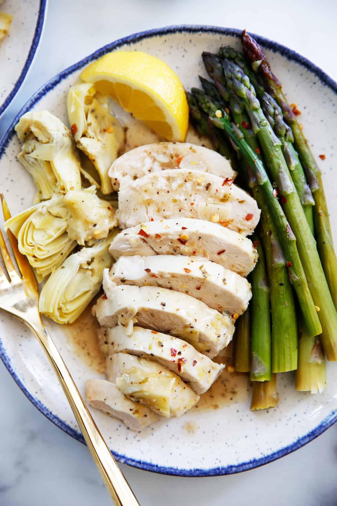

Poached Chicken

Description
An approximation of Poached Chicken and Asparagus from Mark Bittman's book, How to Cook Everything Fast.
Not fully reproduced here. This is a one pot meal that's both quick, and easy to clean up.
Ingredients
- 1 pound of chicken breast
- 2 lemons
- 1 pound of asparagus
- 1/2 cup of mayonnaise
- 2 cloves of garlic
- black peppercorns
Steps
- Halve one lemon and juice, set aside. Slice the other and put in the bottom of a large stock pot.
- Add 1 cup of water and black peppercorns to taste and set on high heat.
- Place chicken in water and let boil for eight minutes.
- Flip chicken and place trimmed asparagus on top. Reduce heat to simmer and cook for another five minutes.
- Combine mayo, minced garlic, lemon juice and a pinch of salt and pepper to make sauce.
- Remove items from pot when cooked and slice chicken. Serve immediately.